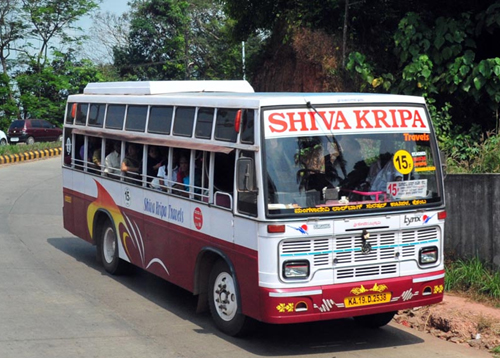
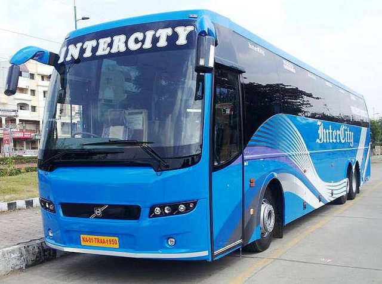
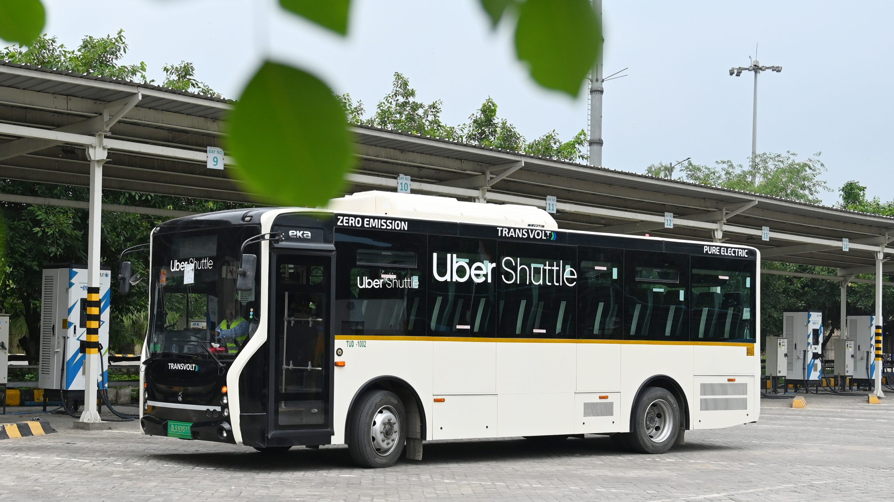
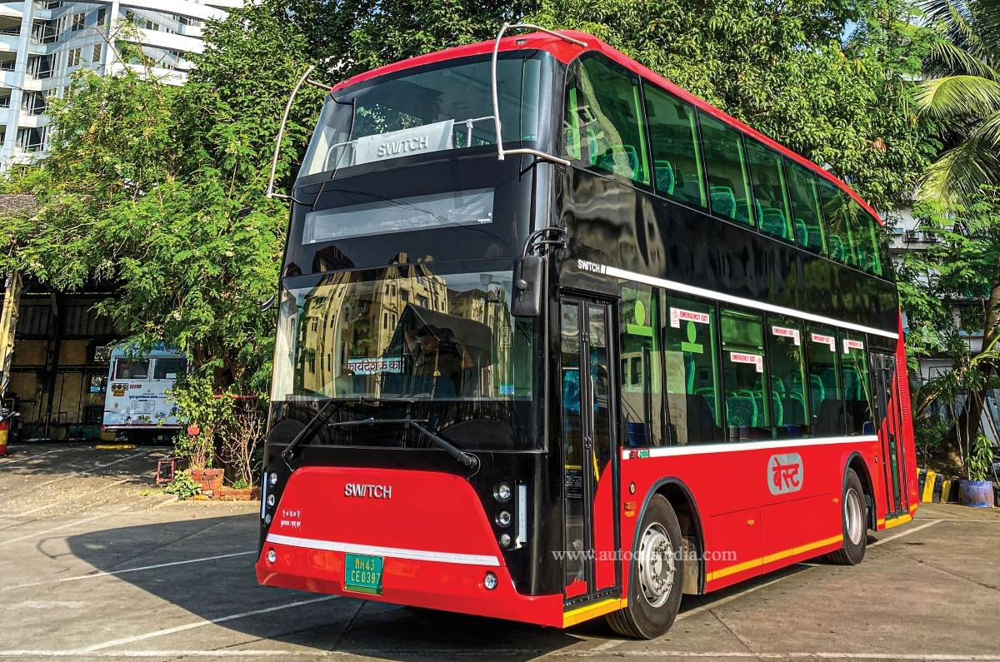
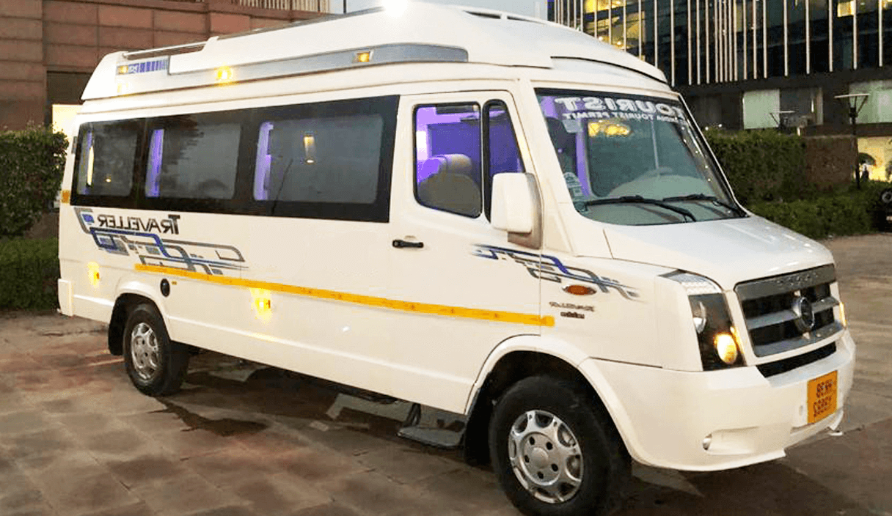
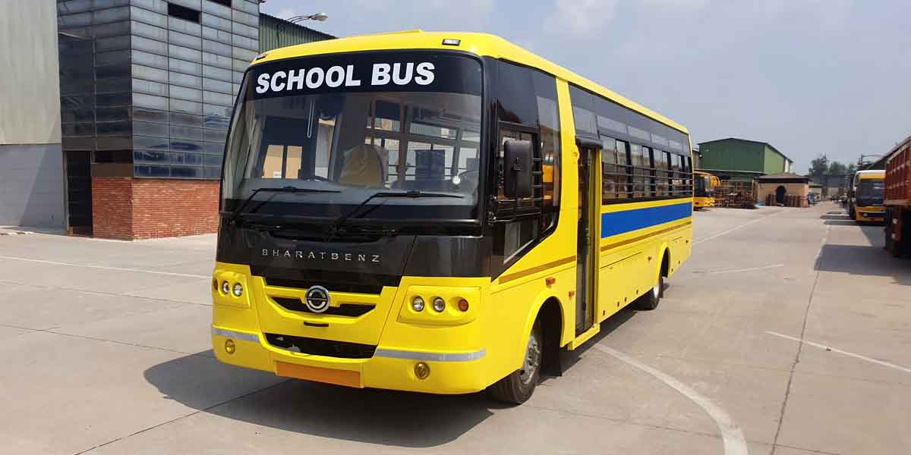
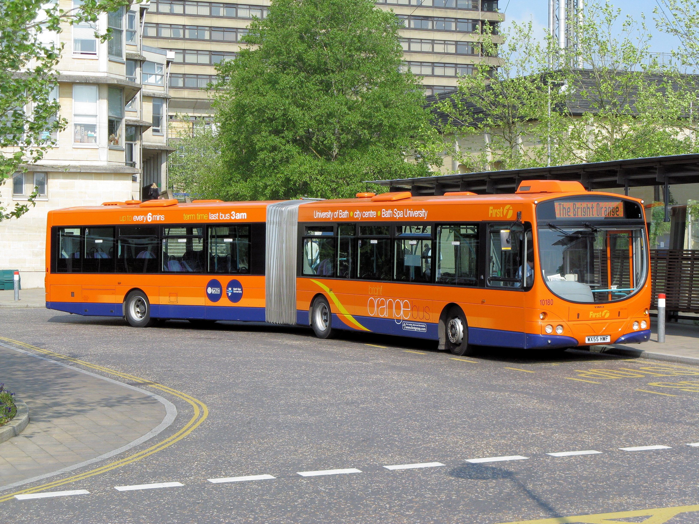

TYPES OF BUS

City Buses
City buses are a primary mode of public transportation in urban areas. Designed for frequent stops and short trips, they often feature low floors for easy boarding and disembarking. These buses help reduce traffic congestion and promote sustainable travel within cities. Equipped with modern amenities like Wi-Fi and air conditioning, city buses offer a comfortable ride for daily commuters.The integration of real-time tracking and mobile apps allows passengers to plan their journeys more efficiently, enhancing the overall public transport experience.

Intercity Buses
Intercity buses are designed for travel between different cities, offering comfortable seating and amenities for longer journeys. They often include features such as reclining seats, air conditioning, onboard restrooms, and Wi-Fi to ensure a pleasant travel experience. Intercity buses play a crucial role in connecting urban and rural areas, providing an affordable and convenient transportation option for many passengers.Their spacious and well-equipped interiors make intercity buses a preferred choice for passengers seeking a comfortable and hassle-free travel experience.

Tour Buses
Tour buses are specially designed for group travel and sightseeing. They offer comfortable seating and often feature amenities such as air conditioning, onboard restrooms, and audio-visual systems. These buses provide guided tours, making it easy to explore attractions without the hassle of planning or navigating. Tour buses are ideal for tourists looking to maximize their experience with a structured and informative itinerary.With structured itineraries and experienced guides, tour buses ensure that travelers get the most out of their trips, making them a popular choice for both tourists and locals.

Shuttle Buses
Shuttle buses provide short-distance transportation between specific locations, such as airports, hotels, and city centers. They operate on fixed routes and schedules, ensuring timely and convenient travel for passengers. Often equipped with amenities like air conditioning and luggage storage, shuttle buses offer a comfortable and efficient service for travelers needing quick and reliable transport.Shuttle buses help alleviate traffic congestion and promote a more sustainable mode of short-distance travel.Their convenience and reliability make them a popular choice for passengers seeking hassle-free transportation.

Double-Decker Buses
Double-decker buses are iconic vehicles featuring two levels of seating, providing increased passenger capacity. They are commonly used in cities like London for public transportation and sightseeing tours. With panoramic views from the upper deck, passengers can enjoy a unique and elevated perspective of the city. These buses are perfect for accommodating large groups while offering a memorable travel experience.

Mini Buses
Minibuses are compact vehicles designed to transport smaller groups of passengers, typically accommodating 8 to 30 people. They are commonly used for private hires, airport transfers, and short-distance travel where larger buses aren't needed. With flexible seating arrangements and easy maneuverability, minibuses offer a convenient and efficient transportation option for both urban and rural areas.

School Buses
School buses are specifically designed to transport students to and from school safely. They feature distinct yellow coloring and specialized safety features like flashing lights, stop signs, and reinforced construction. School buses also have high-backed seats and seat belts to protect students in case of accidents.School buses adhere to strict regulations to ensure the safety and well-being of children. Widely recognized and regulated, school buses play a crucial role in ensuring the safety and convenience of student transportation.

Articulated Buses
Articulated buses, often referred to as "bendy buses," consist of two sections connected by a flexible joint. This design allows them to accommodate a higher number of passengers while maintaining maneuverability on city streets. Commonly used in busy urban areas, articulated buses are ideal for routes with high passenger demand. Their unique structure ensures efficient and comfortable public transportation for large groups of people.